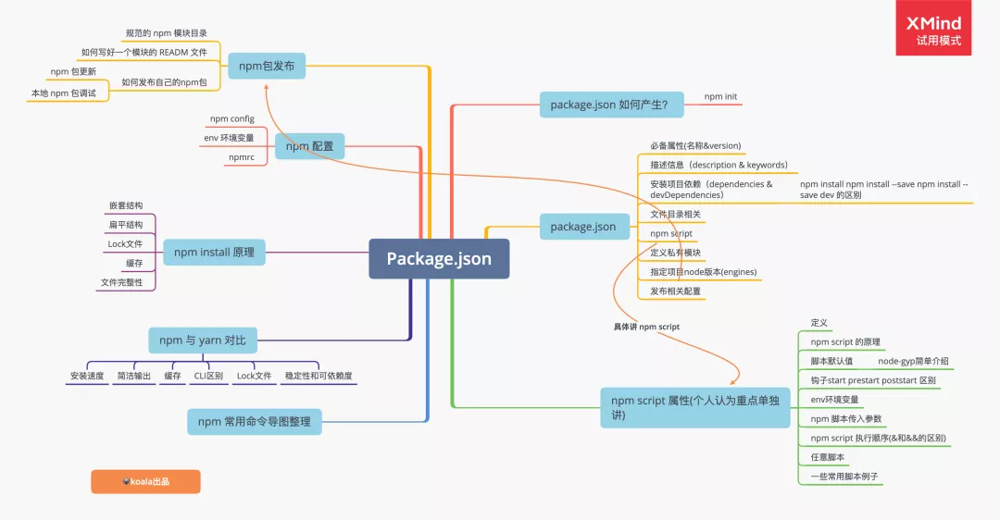

npm

npm init
npm init 命令用来初始化一个简单的 package.json 文件，执行该命令后终端会依次询问 name, version, description 等字段。
npm init默认执行行为
我们在执行 npm init 的时候,会有一个初始化 pacakge.json 过程，然后一路回车，其实可以直接使用 npm init --yes 在命令后追加 --yes 参数即可，其作用与一路回车相同，这样生成的文件中就包含 package.json 文件
自定义npm init行为
在电脑 npmStudy 目录创建一个 .npm-init.js 即可，该文件的 module.exports 即为 package.json 配置内容，需要获取用户输入时候，使用 prompt() 方法即可。例如编写这样的 ~/.npm-init.js：
const description = prompt('description?', 'A new package');
const count = prompt('count?', 30);
module.exports = {
key: 'value',
foo: { count },
name: prompt('name?', 'hello'),
version: prompt('version?', '0.1.0'),
description,
main: 'index.js',
};
生成的package.json
{
"key": "value",
"foo": {
"count": "4"
},
"name": "hello",
"version": "0.1.0",
"description": "init",
"main": "index.js"
}
package.json 中的属性
npm 中的依赖包
dependenices
通过命令npm install/i packageName -S/--save把包装在此依赖项里。如果没有指定版本，直接写一个包的名字，则安装当前npm仓库中这个包的最新版本。如果要指定版本的，可以把版本号写在包名后面，比如npm i vue@3.0.1 -S。
从
npm 5.x开始，可以不用手动添加-S/--save指令，直接执行npm i packageName把依赖包添加到dependencies中去。
"dependencies": {
"lodash": "^4.17.13",
"moment": "^2.24.0",
}
devDependenices
有一些包有可能你只是在开发环境中用到，例如你用于检测代码规范的 eslint ,用于进行测试的 jest ，用户使用你的包时即使不安装这些依赖也可以正常运行，反而安装他们会耗费更多的时间和资源，所以你可以把这些依赖添加到 devDependencies 中，这些依赖照样会在你本地进行 npm install 时被安装和管理，但是不会被安装到生产环境：
"devDependencies": {
"jest": "^24.3.1",
"eslint": "^6.1.0",
}
二者简单对比
devDependencies主要是存放用于本地开发的dependencies会在我们开发的时候带到线上-D会添加到devDependencies里面，-S会添加到dependencies--save-dev也会添加到devDependencies--save会添加到dependencies- 从
npm 5.x开始，如果什么参数都不带，那么默认添加到dependencies中
# 添加到 devDependencies
npm install -D xxxx
# 添加到 dependencies
npm install -S xxxx
bin
"bin": {
"vm2": "./bin/vm2"
},
bin 字段指定了各个内部命令对应的可执行文件的位置。如果全局安装模块报，npm 会使用符号链接把可执行文件链接到 /usr/local/bin，如果项目中安装，会链接到 ./node_modules/.bin/。
上面的这种当你的包安装到全局时：npm 会在 /usr/local/bin 下创建一个以 vm2 为名字的软链接，指向全局安装下来的 vm2 包下面的 "./bin/index.js"。这时你在命令行执行 vm2 则会调用链接到的这个 js 文件。
main
一个常用的npm包
{
"main": "lib/index.js",
}
main 属性指定程序的主入口文件，其他项目在引用这个 npm 包时，实际上引入的是 lib/index 中暴露出去的模块。
npm script
什么是 npm script 脚本?
在生成的 package.json 文件中，有一个 scripts 对象，在这个对象中，npm 允许使用 scripts 字段定义脚本命令。
"scripts": {
"test": "test.js"
"build": "tsc",
},
scripts 对象中每一个属性，对应一段脚本。比如，test 命令对应的脚本是 node test.js。
命令行下使用 npm run 命令，就可以执行这段脚本。
查看当前项目的所有 npm 脚本命令，可以使用不带任何参数的npm run命令。
原理
我们每次在运行 scripts 中的一个属性时候(npm run)，实际系统都会自动新建一个shell(一般是Bash)，在这个shell里面执行指定的脚本命令。因此 凡是能在 shell 中允许的脚本，都可以写在npm scripts中。
特别的点，
npm run 新建的 shell，会在当前目录的node_modules/.bin子目录加入到 PATH 变量，执行结束后，再将 PATH 变量恢复原样。也就是说，当前项目目录node——modules/.bin子目录中所有的脚本，都可以直接用脚本名称调用，不需要增加路径.（简单总结：通过 npm 启动的脚本，会默认把node_modules/.bin加到 PATH 环境变量中。）
node_modules目录下的.bin文件是哪里来的？npm install 安装的某个模块，如果模块在 package.json 中配置了 bin 属性，在安装时候会自动软链接到 node_modules/.bin 中。
脚本默认值
正常情况下，npm 脚本是用户自己定义。但是 npm 本身对两个脚本提供了默认值，这两个脚本不用在 script 属性中定义，可以直接使用
"start": "node server.js"
"install": "node-gyp rebuild"
npm run start的默认值是node server.js，前提是根目录下有server.js这个脚本npm run install的默认值是node-gyp rebuild，前提是根目录下有binding.gyp文件
扩展小知识，node-gyp
是什么，binding.gyp` 文件是什么？GYP 是一种构建自动化工具。
- node-gyp：
node下的gyp。npm 为了方便直接源码分发，用户装的时候需要自己进下编译，我们在开发 node 程序中需要调用一些其他语言编写的工具甚至 dll，这时候需要先编译下其他语言，否则会出现跨平台的问题。node-gyp是用来编译原生C++模块的，也可以编写自己写的C++文件，node-gyp在较新的Node版本中都是自带的，而且是最先版本。 - gyp 文件：当
Node.js项目中有需要和C++交互的需求时，项目的根目需要创建binging.gyp文件，每个.gyp文件都描述了如何去构建项目，每个.gyp文件都描述了如何去构建项目，gyp文件的语法是Python数据格式(Json格式)，配置中数据是键-值对的形式。
钩子(生命周期)
好多语言或者框架我们学的时候都会考虑到生命周期，其实 package.json 中的 script 也是有生命周期的。npm 脚本有两个钩子，pre 和 post，当我们执行start脚本时候，start 的钩子就是 prestart 和 poststart。
当我们执行 npm run start 的时候，npm 会自动按照下面的顺序执行
npm run prestart && npm run start && npm run poststart
那这个钩子有什么用呢，在实际开发中，我们可以做一些准备或者清理工作，下面是个例子(引用的阮一峰老师文章中的例子)
"clean": "rimraf ./dist && mkdir dist",
"prebuild": "npm run clean",
"build": "cross-env NODE_ENV=production webpack"
钩子好用，但是不可乱用，举个开发过程中遇到的坑，有一次想设置运行时的环境变量，当时想优雅一点，就在
prestart里面设置了一个环境变量，但是在项目start的时候，无法拿到设置的环境变量，因为script的属性运行的时候都会新启动一个shell，所以在prestart中设置的环境变量只对应了那个shell的运行时。
env 环境变量
我们在执行 npm run 脚本时候, npm 会设置一些特殊的env环境变量。其中package.json中的所有字段，都会被设置为以npm_package_开头的环境变量。看个简单的例子
{
"name": "npm-demo",
"version": "1.0.0",
"script": {
"build": "webpack --mode=production"
},
"files": ["src"]
}
可以得到 npm_package_name、npm_package_version、npm_package_script_build、npm_package_files_0等变量。注意上面 package.json 中对象和数组中每个字段都会有对应的环境变量。
同时，npm 相关的所有配置也会被设置为以npm_config_开头的环境变量。此外，还会设置一个比较特殊的环境变量npm_lifecycle_event，表示正在运行的脚本名称。比如执行npm run serve 的时候，process.env.npm_lifecycle_event值为serve，通过判断这个变量，可以将一个脚本使用在不同的npm scripts中。这里还要提一下上面说的钩子，npm_lifecycle_event可以和钩子配合使用，利用这个变量，在同一个脚本文件里面，为不同的 npm scripts 命令编写代码。请看下面的例子。
const TARGET = process.env.npm_lifecycle_event;
if (TARGET === 'service') {
console.log(`Running the service task!`);
}
if (TARGET === 'preservice') {
console.log(`Running the preservice task!`);
}
if (TARGET === 'postservice') {
console.log(`Running the postservice task!`);
}
强调：这些环境变量只能在
npm run的脚本执行环境内拿到，正常执行的 node 脚本是获取不到的。所以，不能直接通过env $npm_package_name的形式访问，但可以在 scripts 中定义脚本"scripts": {"bundle": "echo $npm_package_name"}来访问。
环境变量常用小技巧
1、env 命令可以列出所有环境变量
npm run env
2、在shell脚本中输出环境变量
echo PATH
3、在 shell 脚本设置环境变量
echo PATH = /usr/local/lib
有的时候我们需要设置的环境变量是相对项目的 再补充一个shell脚本中设置环境变量时候如何拼接相对路径
echo PATH = ${pwd}/lib/include //使用${},也可以直接使用双引号
脚本传入参数
说到脚本传入参数，需要再次提到前面说的 pacakge.json 中的 bin 字段，bin 字段指定了各个内部命令对应的可执行文件的位置。前面已经说了 bin 文件的产生，有了 bin 字段，在安装这个模块的时候，node_modules 下面的 .bin/文件夹 下会有对应模块的文件，和模块中的文件相同，然后我们就可以通过调用这个文件脚本中的方法传入参数了。
node 处理 scripts 中的参数，除了属性后面的第一个命令，以空格分割的任何字符串(除特别shell语法)都是参数，并且都能通过 process.argv 属性访问。
process.argv属性返回一个数组，数组包含了启动node进程时的命令行参数。第一个元素为启动node进程的可执行文件的绝对路径名process.execPath,第二个元素为当前执行的jacascript文件路径。剩余的元素为其他命令行参数。
执行顺序
npm 脚本执行多任务分为两种情况
- 并行任务(同时的平行执行)，使用&符号
$ npm run script1.js & npm run script2.js
- 串行任务(前一个任务成功，才执行下一个任务)，使用 && 符号
$ npm run script1.js && npm run script2.js
任意脚本
我们配置的脚本命令，如 "start": "node test.js"，node test.js 会当做一行代码传递给系统的 shell 去解释执行。实际使用的 shell 可能会根据系统平台而不同，类 UNIX 系统里，如 macOS 或 linux 中指代的是 /bin/sh， 在 windows 中使用的是 cmd.exe。原理我们也看了，因为交给 shell 去解释执行的，说明配置的脚本可以是任意能够在 shell 中运行的命令，而不仅仅是 node 脚本或者 js 代码。如果你的系统里安装了 python（或者说系统变量 PATH里能找到 python 命令），你也可以将 scripts 配置为 "myscript": "python xxx.py"
npm配置
npm 的配置操作可以帮助我们预先设定好npm对项目的行为动作，也可以让我们预先定义好一些配置项以供项目中使用。
npm config
npm cli 提供了 npm config 命令进行 npm 相关配置，通过 npm config ls -l 可查看 npm 的所有配置，包括默认配置。npm 文档页为每个配置项提供了详细的说明 https://docs.npmjs.com/misc/config . 修改配置的命令为 npm config set, 我们使用相关的常见重要配置:
proxy, https-proxy: 指定 npm 使用的代理registry指定npm下载安装包时的源，默认为https://registry.npmjs.org/可以指定为私有Registry源package-lock指定是否默认生成package-lock文件，建议保持默认 truesave true/false指定是否在npm install后保存包为dependencies,npm 5起默认为true
删除指定的配置项命令为 npm config delete <key>.
这里最常见的一个操作是 npm 太慢，设置淘宝镜像
npm config set registry https://registry.npm.taobao.org
恢复使用之前的 npm
npm config set registry https://registry.npmjs.org
env 环境变量
如果env环境变量中存在以npm_config_为前缀的环境变量，则会被识别为npm的配置属性。比如在env环境变量中设置npm_config_package_lock变量：
export npm_config_package_lock=false //修改的是内存中的变量，只对当前终端有效
这时候执行npm install，npm会从环境变量中读取到这个配置项，从而不会生成package-lock.json文件。
查看某个环境变量：echo $NODE_ENV 删除某个环境变量：unset NODE_ENV
npmrc 文件
除了使用 CLI 的 npm config 命令显示更改 npm 配置，还可以通过 npmrc 文件直接修改配置。
这样的 npmrc 文件优先级由高到低包括：
- 工程内配置文件:
/path/to/my/project/.npmrc - 用户级配置文件:
~/.npmrc - 全局配置文件:
$PREFIX/etc/npmrc(即npm config get globalconfig 输出的路径) - npm内置配置文件:
/path/to/npm/npmrc
很多时候我们在公司内网需要通过代理才能访问npm源，通过这个机制，我们可以方便地在工程跟目录创建一个 .npmrc 文件来共享需要在团队间共享的 npm 运行相关配置。比如如果我们在公司内网环境下需通过代理才可访问 registry.npmjs.org 源，或需访问内网的 registry, 就可以在工作项目下新增 .npmrc 文件并提交代码库。
proxy = http://proxy.example.com/
https-proxy = http://proxy.example.com/
registry = http://registry.example.com/
因为项目级 .npmrc 文件的作用域只在本项目下，所以在非本目录下，这些配置并不生效。对于使用笔记本工作的开发者，可以很好地隔离公司的工作项目、在家学习研究项目两种不同的环境。
将这个功能与 ~/.npm-init.js 配置相结合，可以将特定配置的 .npmrc 跟 .gitignore, README 之类文件一起做到 npm init 脚手架中，进一步减少手动配置。
npm 包发布
规范的 npm 模块目录
一个 node.js 模块是基于 CommonJS 模块化规范实现的，严格按照 CommonJS 规范，模块目录下除了必须包含包描述文件 package.json 以外，还需要包含以下目录：
- bin：存放可执行二进制文件的目录
- lib：存放js代码的目录
- doc：存放文档的目录
- test：存放单元测试用例代码的目录
如何写好一个模块的 README 文件
这里不单独写，推荐一篇不错的讨论：https://www.zhihu.com/question/29100816
如何发布自己的 npm 包
- 先去 npm 注册个账号，然后在命令行使用
npm adduser #根据提示输入用户名密码即可
- 使用命令发布你的包
在推送之前，可以通过配置一个
.npmignore文件来排除一些文件, 防止大量的垃圾文件推送到npm, 规则上和你用的.gitignore是一样的。.gitignore文件也可以充当.npmignore文件
npm publish
- 发布成功之后，你就可以像下载安装其他包一样使用你自己的开发工具了
npm install koalanpmstudy
关于 npm 包的更新
更新 npm 包也是使用 npm publish 命令发布，不过必须更改 npm 包的版本号，即 package.json 的 version 字段，否则会报错，同时我们应该遵 Semver(语义化版本号) 规范，npm 提供了 npm version 给我们升级版本
# 升级补丁版本号
$ npm version patch
# 升级小版本号
$ npm version minor
# 升级大版本号
$ npm version major
本地开发的 npm 包如何调试
在本地开发的模块包的时候，可以使用 npm link 调试，将模块链接到对应的运行项目中去，方便地对模块进行调试和测试。具体使用步骤如下
- 假如我的项目是
koalaNpmStudy，假如我的 npm 模块包名称是npm-ikoala - 进入到 模块包
npm-ikoala目录中，执行npm link - 在自己的项目
koalaNpmStudy中创建连接执行npm link npm-ikoala - 在自己项目的
node_module中会看到链接过来的模块包，然后就可以像使用其他的模块包一样使用它了。 - 调试结束后可以使用
npm unlink取消关联
npm link主要做了两件事：
- 为目标
npm模块创建软链接，将其链接到全局node模块安装路径/usr/local/lib/node_modules/。- 为目标
npm模块的可执行bin文件创建软链接，将其链接到全局node命令安装路径/usr/local/bin/。